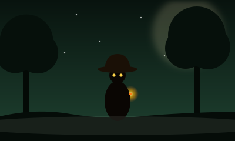
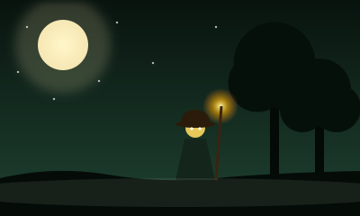
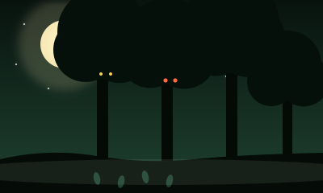
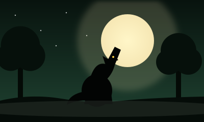
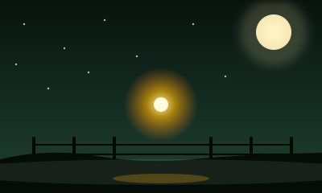
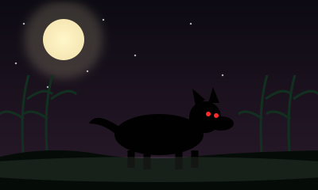
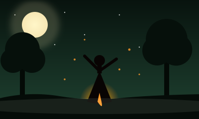
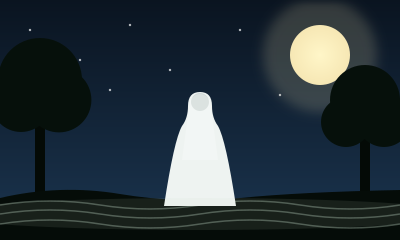

Leyendas y mitos
El Pombero

Duende del Litoral y Paraguay, bajito, peludo y de sombrero de paja. Protege el monte y a los animales, y se lo reconoce por su silbido en las noches de siesta. Para no enojarlo se le deja tabaco, caña y miel.
Yasy Yateré

Pequeño ser rubio, con sombrero y bastón, que anda en las horas de siesta. Cuentan que atrae a los chicos que no duermen y los deja perdidos en el monte.
El Kurupí

Espíritu del monte guaraní, protector de árboles y animales. Se dice que tiene los pies al revés para despistar a quien siga sus huellas.
El Lobizón

Séptimo hijo varón seguido de una familia: según la creencia, las noches de luna llena se transforma en una criatura mitad hombre, mitad lobo o perro.
La Luz Mala

Una luz fantasmal que flota sobre el campo en la noche. Algunos dicen que señala un tesoro enterrado y otros, un alma que pide oraciones.
El Familiar

Perro negro y enorme del noroeste, que según el mito nace del pacto de un patrón de ingenio con el diablo. Pide un peón por año.
La Telesita

Joven santiagueña que amaba bailar chacarera. Cuentan que su espíritu aún baila en el monte, y se la recuerda con altares de muñecas y cintas.
La Llorona

Mujer de blanco que recorre ríos y calles de noche buscando a sus hijos. Quien oye su lamento debe alejarse sin mirar atrás.
Curiosidades
Ofrendas para el Pombero
Hay 4 ofrendas de miel escondidas entre 16 casillas. Cuidado con el lobizón y la luz mala.